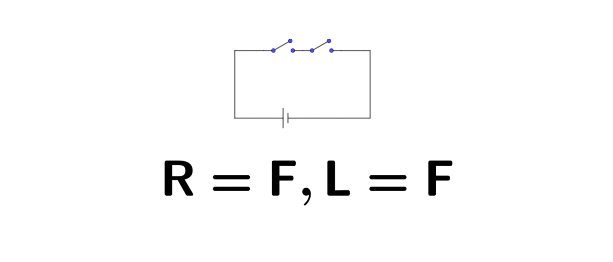
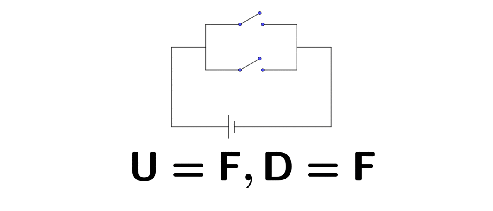

The power of knowledge is that it can infer movements in both the natural and the social world1 The inference can even become part of the movements if were it invented for interventing or intensifying the movements.. What is an inference? It is a sequence of logical reasonings that show how a new fact, called a conclusion in logic, can be derived from a set of known facts, called premises or hypothesis in logic. Understanding inference comes from actually understanding the logic and the mechanics of logical reasoning.
Philosophy brings logic in our reasoning languages. Logical reasoning has its fundamental importance in language communications and mathematics, and also in their combined field of computer programming languages where logic dominates. Logical reasoning is the process of concluding from premises using rules of inference. The reasoning is formally called inference in logic. Logic gives a system for mechanical reasoning. That is a system where the premises are in neutral symbolic forms and where one can use these forms to determine whether or not the conclusions drawn from the premises are valid.
Logic consists of three parts: syntax, semantics, and a set of inference rules. A logic’s syntax tells you, formally, how to read and write sentences in that logic. The meaning of these sentences is called semantics. Inference rules are the results of observations of human reasoning over centuries. These rules are often called laws of thought. They give a way of taking what you know and using it to prove new facts. Logic is a name for the general family of formal proof systems with inference rules.
Logic has a wide variety. Each logic is designed for a purpose, to do a particular kind of reasoning or inference. You need to know what axioms (basic facts) to use in the reasoning and how your logic allows you to complete your reasoning.2 The most commonly used logic for deducing truth or falsehood in a sentence is the zeroth-order logic (or called propositional logic), while for inferences, the first-order predicate logic is more powerful.
The laws of thought are fundamental basic rules that build the logic system. We can treat these laws as some rational summaries of the common senses that guide and underlie everyone’s thinking, thoughts, expressions, discussions, etc. For zeroth-order logic and first-order predicate logic3 Zeroth-order logic is first-order logic without predicates. First-order predicate logic is symbolized reasoning in which each sentence is broken down into qualitifiers and predicates. See section 1.3., the laws of though only need two principles.
Principle of contradiction (principium contradictionis): a sentence (or formally, a proposition) is never true and false at the same time.
Principle of the excluded third (tertium non datur): a sentence (or a proposition) is either true or false - there is no third possibility.
When a logic system satisfies only these two principles, any sentence in this logic is either true (\(\mbox{T}\)) or false (\(\mbox{F}\)). For zeroth-order logic, some operational syntaxes (qualitfier) are used to create new propositions from old ones.
Logical negation: NOT (\(\lnot\)). The negation of a true sentence is a false one and vice versa, \(\lnot\mbox{T}=\mbox{F}\) and \(\lnot\mbox{F}=\mbox{T}\).
Logical conjunction: AND (\(\vee\)). The conjunction of two sentences is true if and only if both sentences are true, \(\mbox{T}\vee\mbox{T}=\mbox{T}\). It also means \(\mbox{F}\vee\mbox{T}=\mbox{T}\vee\mbox{F}=\mbox{F}\vee\mbox{F}=\mbox{F}\).
Logical disjunction: OR (\(\land\)). The disjunction of two sentences is true if at least one of them is true, \(\mbox{F}\land\mbox{T}=\mbox{T}\land\mbox{F}=\mbox{T}\land\mbox{T}=\mbox{T}\). Otherwise, the disjunction is false.
In the common language, we say, “The sun is red” and “The sea is blue.” In zeroth-order logic, the sentence “The sun is red” is simply the semantics, and it can be abbreviated in a letter \(R\). Similarly, “The sea is blue” can be written as a letter \(B\). Both \(R\) and \(B\) represent a sentence. Let’s assume that both of them are true, namely \(R=\mbox{T}\) and \(B=\mbox{T}\). So we can make such simple reasoning that the sentence “The sun is red and the sea is blue” must be true as \(R\vee B=\mbox{T}\vee\mbox{T}=\mbox{T}\) according to the logical conjunction.
The most fundamental inference rule in zeroth-order, and later in first-order predicate logic, is the logical implication or called modus ponens. It allows us to identify the premise and the conclusion. It is often easier to deal with an implication when it is expressed in an “if, then” form. In addition, the phrase “if and only if” (iff) is also quite useful, as it is the logical version of equality.
Logical implication: IF-THEN (\(\Rightarrow\)). Sentence \(A\) implies sentence \(B\), denoted by \(A\Rightarrow B\). It means is that if \(A\) is true, then \(B\) must also be true so that \(A\Rightarrow B\) is true. The implication \(A\Rightarrow B\) is false only when \(A=\mbox{T}\) and \(B=\mbox{F}\).4 Notice that if \(A\) is false and whenever \(B\) is false or true, the implication \(A\Rightarrow B\) is true. Because the fact that a wrong premise may imply a wrong or a true conclusion is true.
Logical bicondition: IFF (\(\Leftrightarrow\)). \(A\Leftrightarrow B\) is the logical conjunction of the implication \(A\Rightarrow B\) and the converse \(B\Rightarrow A\) It means \(A\Leftrightarrow B\) is true whenever the sentences \(A\) and \(B\) are both true or are both false.
We sometimes refer the symbols \(\lnot\), \(\vee\), \(\land\), \(\Rightarrow\) and \(\Leftrightarrow\) as logical connectives. The connectives give us the ability to form all of the basic logical statements.
The invention of the computer relates to the intention of finding a way to simulate the rational human brain that can execute logical thinking. Boole (1854), in his book of laws of thought, suggested an algebra system in which logic can be represented by mathematics. With this kind of algebra, he indicated that it is possible to have a mathematical description of how the brain works. The current computer realizes some of his ambitions.
Here is a simple example of the realization of Boole’s suggestion. If we assign number \(1\) to True (\(\mbox{T}\)) and number \(0\) to False (\(\mbox{F}\)), by the principle of contradiction and principle of the excluded third, we know that any sentence will be assigned a value of either \(0\) or \(1\). For the logical conjunction AND (\(\vee\)) with \(\mbox{T}=1\) and \(\mbox{F}=0\), there is \[0\vee0=0,\:0\vee1=0,\,1\vee0=0,\,1\vee1=1.\] The role of \(\vee\) here is very similar to the role of the multiplication operator \(\times\). If you replace \(\vee\) with \(\times\), the results above still hold. Similarly, for the logical disjunction OR (\(\land\)), there is \[0\land0=0,\:0\land1=1,\,1\land0=1,\,1\land1=1.\] The above results are almost the same as those of regular addition \(+\), except the last case, which now implies \(1+1\neq2\). That is because \(2\) is not defined in this algebra system (principle of the excluded third).
Figure 1.1: In series (R=right, L=left)
This algebra system can be implemented in an electric circuit. Two switches, “off” and “on”, represent binary values \(0\) and \(1\). Then the logical operators come with the structure of the circuit. For example, if you connect a lightbulb and battery by using two switches. When these two switches are connected one right after the other, namely in series, the circuit will perform exactly as logical conjunction AND. The lightbulb only lights up, which means the result is \(1\), when you open both switches, like \(1\times1=1\). In the case that only one switch is opened or both are closed, the lightbulb will stay off, like \(1\times0=0\) or \(0\times0=0\).
Figure 1.2: In parallel (U=up, D=down)
Similarly, when two switches are in parallel, the circuit will perform exactly as the logical disjunction OR. Thus, these circuits realize the basic operations in Boolean algebra. With this algebra and the development of electrical circuitry, the computer finally appeared.
If our goal is to seek the truth, then we need to connect many pieces of premises and to use them to prove the conclusion. Zeroth-order logic is not powerful enough to represent all types of useful assertions or to express certain types of relationships between sentences such as equivalence. To cope with deficiencies of zeroth-order logic, we need two new features: predicates and quantifiers. A predicate is a sort of like a function that describes properties of objects or relationships between objects. Quantifiers let you limit the statement to a particular set of objects instead of allowing ambiguous objects. These two features become important when the sentences containing variables5 Constants represent objects in the domain of interest, such as a number or a value about which we can reason by using the logic. Variables, on the other hand, range over the objects in the domain. because the truth or falseness of the sentences is only known when the variables obtain the assigned values.
We know that the sentence “The sun is red” can be written as \(R\). Previously, we assume that \(R\) is true. This assumption, however, is not quite precise. The sun is red in the daytime, but it can be pink during the dawn, or purple during the sunset or even grey in the cloud. To avoid these worries, we can modify the sentences into “(The sun during the daytime) is red” to assure the sentence still true. Notice that if we change the statement (The sun during the daytime) into (The sun during the sunset), then the sentence becomes false. The phrase in the brackets is a variable. We can write the previous sentence as \(R(x)\). When the variable \(x\) represents the phrase “The sun in the daytime”, then \(R(x)\) is true. Here \(R\) represents the predicate “is red”, and \(R(x)\) reads as “\(x\) is red”.
Predicate: A verb phrase template that describes a property of objects, or a relationship among objects represented by the variables.
Universal quantification: ANY (\(\forall\)). Suppose that \(S\) is a sentence, and \(x\) is a variable of this sentence, then the expression \(\forall x:\: S(x)\) means that the predicate \(S(x)\) is true for all possible values of \(x\).
Existential quantification: EX (\(\exists\)). Suppose that \(x\) is a variable, and \(S(a)\) is true when \(x=a\). The expression \(\exists x:\, S(x)\) means that there is at least one \(x\) such that \(S(x)\) is true.
A predicate with variables is not a sentence. For example, the statement \(x>2\) with variable \(x\) over the natural numbers is neither true nor false since we don’t know what \(x\) is. It can be true or false, depending on the value of \(x\). A predicate becomes a simple fact or a simple sentence only when its variable values are filled.
With these logical features, the first-order predicate logic has been endowed an ability to prove things. Proof in logic is done by inference because inference gives you a way of using what you know to prove new facts. Almost all important inferences outside logic and mathematics are induction. In computer science and mathematics, the common inference rule is mathematical induction6 The proof given by mathematical induction is, in fact, about deductive reasoning. Although it is called mathematical induction, the implication (\(\Rightarrow\)) is a deductive rule of inference.. The mathematical induction includes two steps. The first step, or the basic step, is to prove the property holds for the initial value. The second step, or the induction step, is to prove that the same property holds for arbitrary sequential values. The simplest form of mathematical induction is used for inferring a statement involving natural numbers.
Natural numbers \(0,1,2,3,\dots\), denoted by \(\mathbb{N}\), are the fundamentals because, for the current computer, any computable thing ultimately comes from the natural numbers. Also, the natural number system is almost the simplest and most familiar number system. Natural numbers’ omnipresence is across all of the sciences. Peano’s induction rule gives us a way of formalizing the reasoning or inference procedure for the statement in such a system. The induction rule is given as follows.
A statement \(S\) is true for all natural numbers if
\(S\) is true for the initial value \(0\), namely \(S(0)\) is true;
if \(S(x)\) is true for a natural number \(x\), then \(S(x+1)\) is true.7 Here is a version of its logical expressions: IF 1) (\(S(0)=\mbox{T}\)) AND 2) (IF \(S(x)=\mbox{T}\), THEN \(S(x)\Rightarrow S(x+1))=\mbox{T}\)); THEN \(S=\mbox{T}\) for \(\forall x \in \mathbb{N}\).
This induction rule is essential. Notice that \(S(0)\) is just a fact for zero. The standard implication \(S(0)\Rightarrow S(1)\) can only make reasoning for two numbers, \(0\) and \(1\). But there are infinite natural numbers. By using the variable \(x\) to represent any possible naturals, we can apply the implication \(S(x)\Rightarrow S(x+1)\) infinitely many times. This application of variables \(x\) extends the reasoning from two numbers to infinite natural numbers.
Here is a specific use of the induction rule. Consider \(S(x)\) as an equation \[\begin{equation*} 0+1+2+\cdots+x=\frac{x(x+1)}{2}. \end{equation*}\] We can prove that this equation is true by proving (i) \(0=0(0+1)/2\) and (ii) if \(S(x)\) is true, then the equation \(S(x+1)\), namely \[\begin{align*} 0+1+\cdots+x+(x+1)=& \frac{x(x+1)}{2}+(x+1) \\ =\frac{(x+1)(x+2)}{2} &=\frac{(x+1)((x+1)+1)}{2}, \end{align*}\] is also true. This induction extends the reasoning about finite objects to infinite ones.
Page built: 2019-12-08